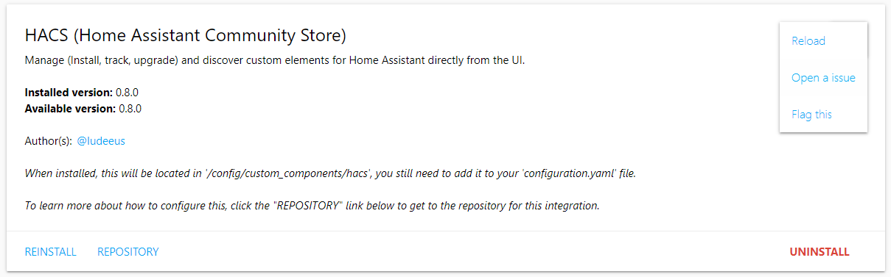

Repository¶
During startup HACS loads all known repositories, when it does you will see a progressbar at the top of the page, if will not go away on it's own, try refreshing the bowers window after a couple of minutes.
The repository view will be different depending on:
- The state of the repository.
- The type of repository.
- What the developer have added to the repository.
General structure¶

Menu (To the right in the view)¶
Reload¶
This will reload the information about this repository.
Hide/Show Beta¶
Define if you want to hide/show beta releases (pre-releases) from the repository. This will only show if the repository uses releases.
Hide¶
This will hide this repository from the overview/store. HACS does not update information about hidden repositories.
To unhide a hidden repository go to the settings tab.
Open a issue¶
This will take you to the issue tracker for that repository.
Flag this¶
HACS have a blacklist of repositories, use this option to get to a issue template in the HACS repository where you suggest that the repository is added to that list and why.
Buttons/Links¶
Main action¶
This button will have a different name depending of the state of the reopsitory.
- If not installed it will say "Install".
- If an update is pending it will say "Upgrade".
- If it is installed and no update is pending it will say "Reinstall".
Clicking this will start the installation of the newest version.
Changelog¶
This will take you to the release page for the repository. This will only show if there is an update, and only if the repository uses GitHub Releases.
Open plugin¶
Open the downloaded plugin file for inspection. This will only show for installed plugins.
Repository¶
This will take you to the GitHub repository for the repository.
Uninstall¶
This will delete the files on the file system and tell HACS that you do not want to keep tracking it. This will only show on installed repositories.